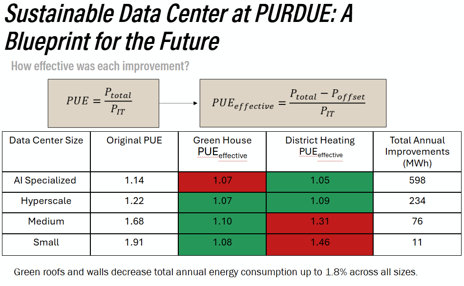

Data Center Sustainability Analysis: A Blueprint for the Future

Overview
Developed a complete sustainability framework to evaluate data center design at Purdue University, addressing the explosive growth in computational demand and associated energy challenges. With data center load growth projected to double or triple by 2028 and major tech companies investing $260B+ in data center infrastructure, this project tackles both operational efficiency and waste heat recovery.
Key Contributions
- Created piecewise linear models relating server count, floor area, energy consumption, and waste heat across four data center classes (Small, Medium, Hyperscale, AI Specialized)
- Developed novel "effective PUE" metric that accounts for waste heat recovery benefits
- Analyzed two waste heat recovery pathways: district heating network and greenhouse integration
- Performed building optimization using EnergyPlus simulations for geometry, green walls/roofs, and exterior color
Data Center Sizing & Energy Modeling
Established quantitative relationships between floor area (10–20,000 sq ft), server capacity (1–499 servers), and energy consumption using DOE data. Built piecewise linear interpolation models for each size category with Python, accounting for varying PUE values (1.2–1.8) and server types (single/dual-processor, 4-processor, 4-GPU configurations).
Building Performance Simulation
Used EnergyPlus to model climate-related loads for data center buildings in West Lafayette:
- Shape optimization: Found golden ratio (1:1.618) provides optimal volume-to-surface-area balance with only 2% load increase
- Green walls/roofs: Achieved 12% load reduction at 100% coverage, with linear trend showing diminishing returns above 70%
- Color analysis: Solar absorptivity of 0.6–0.7 minimized total building loads
Waste Heat Recovery — Greenhouse Integration
Modeled 5,000 m³ commercial greenhouse heating requirements using London, Ontario climate data (±1–2°C from West Lafayette). Calculated monthly heating loads and waste heat recovery rates for each data center class:
- Small data centers: 2% heating load coverage, 85% fractional heat recovery
- AI Specialized: 85% heating load coverage, 7% fractional heat recovery
- Projected 164,000 kg annual tomato production (40% of West Lafayette demand)
Waste Heat Recovery — District Heating
Analyzed infrastructure requirements for West Lafayette (1,100+ km piping needed for 90% connection rate). Determined AI Specialized (105 kW) and Hyperscale (39 kW with heat pump) data centers meet feasibility threshold for 5GDHC networks. Concluded district heating is viable only for larger installations due to infrastructure costs.
Key Results
Greenhouse Integration
Small/Medium data centers benefit most; greenhouse captures up to 85% of waste heat from small facilities
District Heating
Viable at scale for Hyperscale/AI data centers meeting 5GDHC feasibility thresholds
Building Optimization
Green walls, optimal geometry, and color selection achieve 1.8% load reduction across all scales
Effective PUE
Novel metric enabling direct comparison of building optimization, waste heat recovery, and operational efficiency
Impact
This framework provides actionable guidance for data center sustainability at different scales, addressing a critical gap in combined system-level analysis. By relating all factors back to PUE, the work enables direct comparison of building optimization, waste heat recovery, and operational efficiency strategies specific to local conditions.
Team Members
This project was a collaborative effort. I would like to acknowledge my teammates:
Back to Portfolio